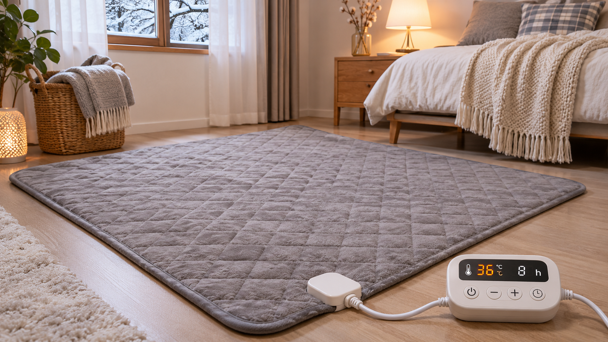

전기장판 전기요금은 소비전력과 사용 시간에 따라 달라지므로 예열 뒤 온도를 낮추고 타이머를 활용하는 것이 핵심입니다. 접거나 두꺼운 이불로 과도하게 덮는 것은 절약법이 아니라 과열 위험입니다.
사용량(kWh)=소비전력(kW)×하루 사용시간×사용일수입니다. 실제 소비는 온도조절 작동과 실내조건에 따라 달라집니다.
고출력 난방기와 같은 멀티탭에 연결하거나 접힌 상태로 고온 운전하지 마세요.
특정 지점만 뜨겁거나 플러그 발열·탄 냄새가 나면 즉시 중단하세요. 전기장판 부분 과열 구분법도 참고하세요.
정격 소비전력은 제품 라벨에서 확인하고 한국전기안전공사 지침을 따르세요.
제품별 차이가 있으므로 제조사 공식 사용설명서와 고객지원 안내를 우선 확인하세요.